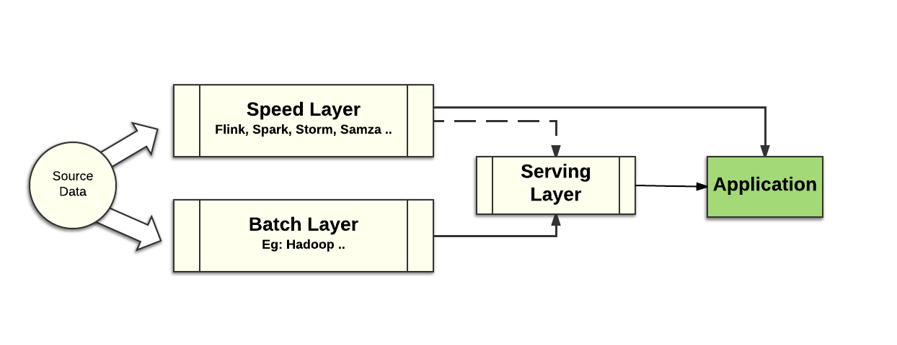
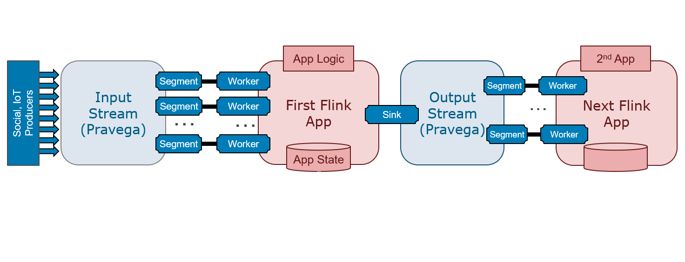
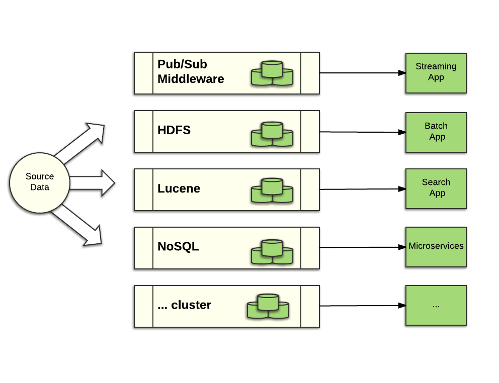
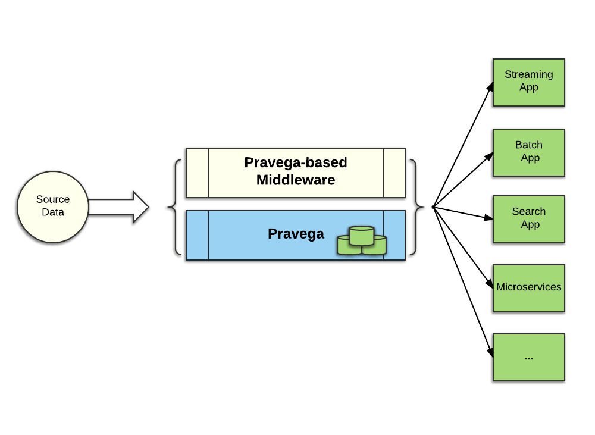

Pravega Key Features
This document explains some of the key features of Pravega. It may be advantageous if you are already familiar with the core concepts of Pravega.
Pravega Design Principles
Pravega was designed to support the new generation of streaming applications: applications that deal with a large amount of data arriving continuously that also need to generate an accurate analysis of that data in the face of late arriving data, data arriving out of order and failure conditions. There are several open source tools to enable developers to build such applications, including Apache Flink, Apache Beam, Spark Streaming and others. To date, these applications used systems such as Apache Kafka, Apache ActiveMQ, RabbitMQ, Apache Cassandra, and Apache HDFS to ingest and store data. We envision instead a unification of the two concepts and our work focuses on both ingesting and storing stream data.
Pravega approaches streaming applications from a storage perspective. It enables applications to ingest stream data continuously and storing it permanently. Such stream data can be accessed with low latency (order of milliseconds), but also months, years ahead as part of analyzing historical data.
The design of Pravega incorporates lessons learned from using the Lambda architecture to build streaming applications and the challenges to deploy streaming applications at scale that consistently deliver accurate results in a fault tolerant manner. The Pravega architecture provides strong durability and consistency guarantees, delivering a rock solid foundation to build streaming applications upon.
With the Lambda architecture, the developer uses a complex combination of middleware tools that include batch style middleware mainly influenced by Hadoop and continuous processing tools like Storm, Samza, Kafka and others.

In this architecture, batch processing is used to deliver accurate, but potentially out of date analysis of data. The second path processes data as it is ingested, and in principle the results are innacurate, which justifies the first batch path. With this approach, there are two copies of the application logic because the programming models of the speed layer are different than those used in the batch layer. An implementation of the Lambda architecture can be difficult to maintain and manage in production. This style of big data application design consequently has been losing traction. A different kind of architecture has been gaining traction recently that does not rely on a batch processing data path. This architecture is called Kappa.
The Kappa architecture style is a reaction to the complexity of the Lambda architecture and relies on components that are designed for streaming, supporting stronger semantics and delivering both fast and accurate data analysis. The Kappa architecture is a simpler approach:

There is only one data path to execute, and one implementation of the application logic to maintain, not two. With the right tools, built for the demands of processing streaming data in a fast and accurate fashion, it becomes simpler to design and run applications in the space of IoT, connected cars, finance, risk management, online services, etc. With the right tooling, it is possible to build such pipelines and serve applications that present high volume and demand low latency.
Applications often require more than one stage of processing. Any practical system for stream analytics must be able to accomodate the composition of stages in the form of data pipelines:

With data pipelines, it is important to think of guarantees end-to-end rather than on a per componenent basis. For example, it is not sufficient that one stage guarantees exactly-once semantics while at least one other does not make such a guarantee. Our goal in Pravega is enable the design and implementation of data pipelines with strong guarantees end-to-end.
Pravega - Storage Reimagined for a Streaming World
Pravega introduces a new storage primitive, a stream, that matches continuous processing of unbounded data. In Pravega, a stream is a named, durable, append-only and unbounded sequence of bytes. With this primitive, and the key features discussed in this document, Pravega is an ideal component to combine with stream processing engines such as Flink to build streaming applications. Because of Pravega's key features, we imagine that it will be the fundamental storage primitive for a new generation of streaming-oriented middleware.
Let's examine the key features of Pravega.
Exactly Once Semantics
By exactly once semantics we mean that Pravega ensures that data is not duplicated and no event is missed despite failures. Of course, this statement comes with a number of caveats, like any other system that promises exactly-once semantics, but let's not dive into the gory details here. An important consideration is that exactly-once semantics is a natural part of Pravega and has been a goal and part of the design from day zero.
To achieve exactly once semantics, Pravega Streams are durable, ordered, consistent and transactional. We discuss durable and transactional in separate sections below.
By ordering, we mean that data is observed by readers in the order it is written. In Pravega, data is written along with an application-defined routing key. Pravega makes ordering guarantees in terms of routing keys. Two pieces of data with the same routing key will always be read by a Reader in the order they were written. Pravega's ordering guarantees allow data reads to be replayed (e.g. when applications crash) and the results of replaying the reads will be the same.
By consistency, we mean all Readers see the same ordered view of data for a given routing key, even in the face of failure. Systems that are "mostly consistent" are not sufficient for building accurate data processing.
Systems that provide "at least once" semantics might present duplication. In such systems, a data producer might write the same data twice in some scenarios. In Pravega, writes are idempotent, rewrites done as a result of reconnection don't result in data duplication. Note that we make no guarantee when the data coming from the source already contains duplicates. Written data is opaque to Pravega and it makes no attempt to remove existing duplicates.
We have not limited our focus to exactly-once semantics for writing, however. We also provide, and are actively working on extending the features, that enable exactly-once end-to-end for a data pipeline. The strong consistency guarantees that the Pravega store provides along with the semantics of a data analytics engine like Flink enables such end-to-end guarantees.
Auto Scaling
Unlike systems with static partitioning, Pravega can automatically scale individual data streams to accommodate changes in data ingestion rate.
Imagine an IoT application with millions of devices feeding thousands of data streams with information about those devices. Imagine a pipeline of Flink jobs that process those streams to derive business value from all that raw IoT data: predicting device failures, optimizing service delivery through those devices, or tailoring a customer's experience when interacting with those devices. Building such an application at scale is difficult without having the components be able to scale automatically as the rate of data increases and decreases.
With Pravega, it is easy to elastically and independently scale data ingestion, storage and processing – orchestrating the scaling of every component in a data pipeline.
Pravega's support of auto scaling starts with the idea that Streams are
partitioned into Stream Segments. A Stream may have 1 or more Stream Segments; recall
that a Stream Segment is a partition of the Stream associated with
a range of routing keys.
Any data written into the Stream is written to the Stream Segment associated with the
data's routing key. Writers use application-meaningful routing keys like
customer-id, timestamp, machine-id, etc to make sure like data is grouped
together.
A Stream Segment is the fundamental unit of parallelism in Pravega Streams. A Stream with multiple Stream Segments can support more parallelism of data writes; multiple Writers writing data into the different Stream Segments potentially involving all the Pravega Servers in the cluster. On the Reader side, the number of Stream Segments represents the maximum degree of read parallelism possible. If a Stream has N Stream Segments, then a ReaderGroup with N Readers can consume from the Stream in parallel. Increase the number of Stream Segments, you can increase the number of Readers in the ReaderGroup to increase the scale of processing the data from that Stream. And of course if the number of Stream Segments decreases, it would be a good idea to reduce the number of Readers.
A Stream can be configured to grow the number of Stream Segments as more data is written to the Stream, and to shrink when data volume drops off. We refer to this configuration as the Stream's Service Level Objective or SLO. Pravega monitors the rate of data input to the Stream and uses the SLO to add or remove Stream Segments from a Stream. Segments are added by splitting a Segment. Segments are removed by merging two Segments. See AutoScaling: The number of Stream Segments can vary over time, for more detail on how Pravega manages Stream Segments.
It is possible to coordinate the auto scaling of Streams in Pravega with application scale out (in the works). Using metadata available from Pravega, applications can configure the scaling of their application components; for example, to drive the number of instances of a Flink job. Alternatively, you could use software such as Cloud Foundry, Mesos/Marathon, Kubernetes or the Docker stack to deploy new instances of an application to react to increased parallelism at the Pravega level, or to terminate instances as Pravega scales down in response to reduced rate of data ingestion.
Distributed Computing Primitive
Pravega is great for distributed applications, such as micro-services; it can be used as a data storage mechanism, for messaging between micro-services and for other distributed computing services such as leader election.
State Synchronizer, a part of the Pravega API, is the basis of sharing state across a cluster with consistency and optimistic concurrency. State Synchronizer is based on a fundamental conditional write operation in Pravega, so that data is written only if it would appear at a given position in the Stream. If a conditional write operation cannot meet the condition, it fails.
State Synchronizer is therefore a strong synchronization primitive that can be used for shared state in a cluster, membership management, leader election and other distributed computing scenarios.
You can learn more about the State Synchronizer here.
Write Efficiency
Pravega write latency is of the order of milliseconds, and seamlessly scales to handle high throughput reads and writes from thousands of concurrent clients, making it ideal for IoT and other time sensitive applications.
Streams are light weight, Pravega can support millions of Streams, this frees the application from worrying about statically configuring streams and preallocating a small fixed number of streams and husbanding or limiting stream resource.
Write operations in Pravega are low latency, under 10 ms to return an acknowledgment is returned to a Writer. Furthermore, writes are optimized so that I/O throughput is limited by network bandwidth; the persistence mechanism is not the bottleneck. Pravega uses Apache BookKeeper to persist all write operations. BookKeeper persists and protects the data very efficiently. Because data is protected before the write operation is acknowledged to the Writer, data is always durable. As we discuss below, data durability is a fundamental characteristic of a storage primitive, To add further efficiency, writes to BookKeeper often involve data from multiple Stream Segments, so the cost of persisting data to disk can be amortized over several write operations.
There is no durability-performance trade-off with Pravega.
Reads are efficient too. A Reader can read from a Stream either at the tail of the Stream or at any part of the Stream's history. Unlike some log-based systems that use the same kind of storage for tail reads and writes as well as reads to historical data, Pravega uses two types of storage. The tail of the Stream is in so-called Tier-1 storage. Writes are implemented by Apache BookKeeper as mentioned above. Tail reads are served out of a Pravega-managed memory cache. In fact, BookKeeper serves reads only in failure recovery scenarios, where a Pravega Server has crashed and it is being recovered. This use of BookKeeper is exactly what it was designed for: fast writes, occasional reads. The historical part of the Stream is in so-called Tier 2 storage that is optimized for low-cost storage with high-throughput. Pravega uses efficient in-memory read ahead cache, taking advantage of the fact that Streams are usually read in large contiguous chunks and that HDFS is well suited for those sort of large, high-throughput reads. It is also worth noting that tail reads do not impact the performance of writes.
Unlimited Retention
Data in Streams can be retained for as long as the application needs it, constrained to the amount of data available, which is unbounded given the use of cloud storage in Tier 2. Pravega provides one convenient API to access both real-time and historical data. With Pravega, batch and real-time applications can both be handled efficiently; yet another reason why Pravega is a great storage primitive for Kappa architectures.
If there is a value to keeping old data, why not keep it around? For example, in a machine learning example, you may want to periodically change the model and train the new version of the model against as much historical data as possible to yield more accurate predictive power of the model. With Pravega auto-tiering, keeping lots of historical data does not affect the performance of tail reads and writes.
Size of a stream is not limited by the storage capacity of a single server, but rather, it is limited only by the storage capacity of your storage cluster or cloud provider. As cost of storage decreases, the economic incentive to delete data goes away
Storage Efficiency
Use Pravega to build pipelines of data processing, combining batch, real-time and other applications without duplicating data for every step of the pipeline.
Consider the following data processing environment that combines real time processing using Spark, Flink, and or Storm; Haddoop for batch; some kind of Lucene-based Search mechanism like Elastic Search for full text search; and maybe one (or several) NoSQL databases to support micro-services apps.

Using traditional approaches, one set of source data, for example, sensor data from an IoT app, would be ingested and replicated separately by each system. You would end up with 3 replicas of the data protected in the pub/sub system, 3 copies in HDFS, 3 copies in Lucene, 3 copies in the NoSQL database. When we consider the source data is measured in terabytes, the cost of data replication separated by middleware category becomes prohibitively expensive.
Consider the same pipeline using Pravega and middleware adapted to use Pravega for its storage:

With Pravega, the data is ingested and protected in one place; Pravega provides the single source of truth for the entire pipeline. Furthermore, with the bulk of the data being stored in Tier-2 enabled with erasure coding to efficiently protect the data, the storage cost of the data is substantially reduced.
Durability
With Pravega, you don't face a compromise between performance, durability and consistency. Pravega provides durable storage of streaming data with strong consistency, ordering guarantees and great performance.
Durability is a fundamental storage primitive requirement. Storage that could lose data is not reliable storage. Systems based on such storage are not production quality.
Once a write operation is acknowledged, the data will never be lost, even when failures occur. This is because Pravega always saves data in protected, persistent storage before the write operation returns to the Writer.
With Pravega, data in the Stream is protected. A Stream can be treated as a system of record, just as you would treat data stored in databases or files.
Transaction Support
A developer uses a Pravega Transaction to ensure that a set of events are written to a stream atomically.
A Pravega Transaction is part of Pravega's Writer API. Data can be written to a Stream directly through the API, or an application can write data through a Transaction. With Transactions, a Writer can persist data now, and later decide whether the data should be appended to a Stream or abandoned.
Using a Transaction, data is written to the Stream only when the Transaction is committed. When the Transaction is committed, all data written to the Transaction is atomically appended to the Stream. Because Transactions are implemented in the same way as Stream Segments, data written to a Transaction is just as durable as data written directly to a Stream. If a Transaction is abandoned (e.g. if the Writer crashes) the Transaction is aborted and all data is discarded. Of course, an application can choose to abort the Transaction through the API if a condition occurs that suggests the Writer should discard the data.
Transactions are key to chaining Flink jobs together. When a Flink job uses Pravega as a sink, it can begin a Transaction, and if it successfully finishes processing, commit the Transaction, writing the data into its Pravega-based sink. If the job fails for some reason, the Transaction times out and data is not written. When the job is restarted, there is no "partial result" in the sink that would need to be managed or cleaned up.
Combining Transactions and other key features of Pravega, it is possible to chain Flink jobs together, having one job's Pravega-based sink be the source for a downstream Flink job. This provides the ability for an entire pipeline of Flink jobs to have end-end exactly once, guaranteed ordering of data processing.
Of course, it is possible for Transactions across multiple Streams be coordinated with Transactions, so that a Flink job can use 2 or more Pravega-based sinks to provide source input to downstream Flink jobs. In addition, it is possible for application logic to coordinate Pravega Transactions with external databases such as Flink's checkpoint store.
Learn more about Transactions here.